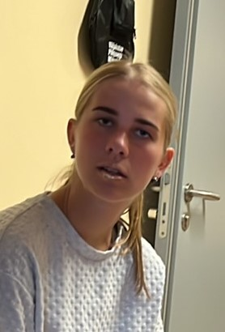

Tadaaa!!!
Jah, sa said personaalselt sulle valmistatud veebilehe!
Ma mõtlesin, et äkki ma kuidagi flexin sellega, mida koolis õpin.
Midagi eriliselt ägedat siit oodata pole mõtet, sest tuleb välja, et ma nii osav veel ei ole,
aga proovimine on pool võitu või midagi (?)
Ma siis alustan kohe sellest kui vägev ja vahva aasta on olnud.
Ma olen ülimalt õnnelik, et me sattusime peaaegu kõiki tantse koos tantsima
ja saladuskatte all võin öelda, et sinuga tuli mul kõik palju paremini välja kui teistega :p
Oma "lõputu pläralära" kuulamise üle ära põe, mulle võid vabalt alati jahvatada.
Ma usun, et väikestest põkslemistest Marinaga, kabinetist, riietest, peikadest ja kõigest muust
jagub veel omajagu juttu.
Hmm... mis veel. Ma vuristan siis veel paar ägedat mälestust ette. See üks äge talvine trenn,
kui sa mind kuidagi küünistada suutsid, nii et veri oli väljas. Kõik need trennivideod, kus tõsteid vaadates
sa arvasid, et olid täielik kapsas ja mina eitasin seda. Mõlemad teame ja enda arvates leiutasime sõna nusperdama.
Võtsime ka kord taipoksi ette ja tuleb välja, et sinu pea on kõvem kui minu oma. Piinarikas jalgade surm gaudekal.
Gaudeka söök... . Me teame mõlemad kuidas on ainuõige viis võileibu teha. jne, neid on kindlasti veel, aga pidu saab
enne läbi, kui sa kõik selle loetud saad.
Anyway... tõesti mõnus aasta oli ja mina küll loodan, et see ei jäänud viimaseks.
Oled üliäge rühmavanem ja veeeeeeelgi parem tantsupartner. Ja kui jälle kuskil kuttidega raskeks läheb, siis võid märku anda
ning ma tulen ja naeran :D

Okei, ma võtan ennast lõpetuseks kokku ja proovin midagi mitte läbi nalja ka öelda.
Tegelikult ka on tore aasta olnud ja kurb kui kiirelt see mööda läks. On olnud ägedaid ja ilusaid hetki,
nii tantsides kui ka puhates. Võibolla jõuab jälle kunagi linnahalli treppidele hommikut vastu võtma :)
Terve suvi peaaegu iga päev rääkimist ja naermist jätab oma jälje, aga vähemalt on tore olnud.
Peale tantse need hetked kui pea rinnale paned jätavad korraks maailma seisma... kõlab mega juustuselt :D.
Ma ei tea miks sa peaksid üldse seda kõike siin uuesti lugema, aga ma ei taha, et see midagi imelikuks teeks.
Tõenäoliselt jään sulle ikka väga heaks tantsupartneriks ja heaks sõbraks, vähemalt ma proovin :).
Tegelt on palju veel, aga võibolla on parem kui see jääbki lihtsalt välja toomata.
Nüüd on siis aeg ka pakike avada. Paki sisu mõte on selles, et Hendriku sugused lobamokad päris surma ei saaks kui
sulle valel ajal lähenevad...